Introduction
In this Final project, we implemented an ICCV 2013 paper: “Content-Aware Rotation” using Matlab. And we wrap it as a Web App using nodeJs.
Usage
Matlab
insideprogram/ directory
simply type I = main(rotate-angle, path-to-image) and Iwill be the rotated image.
Web GUI
with node and npm pre-install, using cmd npm install to install the package inside program/iRotate/ directory
Than npm start to run the server
Go to localhost:3000 to use the GUI
Line Extraction
According to the paper, the first step is to extract the line out of input image using www.ipol.im/pub/art/2012/gjmr-lsd/, and than quantize the line using mash grid so that each line segment is within single quad.
If you are using node GUI, it will automatacally handle this step. If not, please go to program/lsd_1.6 and follow the indtruction there. Make sure you put the result .txt file in the same directory with original image, and name it as 'image-file-name-with-suffix'.txt
Energy Function
To solve the problem, This paper proposed a energy function in [1] based on the four properties below:
Rotation Manipulation

where
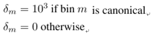Here strong constraints are only on the canonical(vertical/horizontal) lines, which affect non-canonical lines through smooth propagation.
Line Preservation

where

and
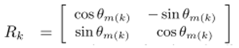The line preservation is important since it builds a line between the lines and the mesh vertices.
Shape Preservation
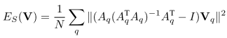where

 denotes the four vertices of a deformed quad q and
denotes the four vertices of a deformed quad q and  are those of the input mesh.
are those of the input mesh.
This contraint energy favors the each quad undergo a similarity transform.
Boundary Preservation

This contraint avoids the image content going outside the boundary of an upright rectangular of the same size as the input image.
Considering the four constraints above, the total energy thus becomes
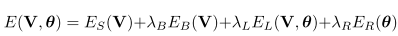where  and
and 
Usage
For debugging purpose, we have caculateTotalEnergy functionfunction Etotal = caculateTotalEnergy(p, V, thetas, lines)
%%% p: parameter object, comes from p = getParams(rotated-angle, path-to-image);
%%% V: Vertex vector.
%%% thetas: thetas vector.
%%% lines: extracted lines vector.
%%% Etotal: Total Energy.
To do optimization, the problem is divided into two subproblems
a. Fix thata update V
b. Fix V update theta
Optimization
to optimize for total energy, there are two step:
- Fix theta update V
- Fix V update theta
Fix theta update V
In this part, the subproblem is to minimize:

Since this is a quadratic function on V, the solution can be given by a sparse linear system. To implement this in Matlab, we try to formulate the problem into
where 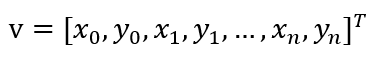
is the x,y coordinates of all vertices.

Thus, all the vertices can be solved.
Fix V update theta
In this part, the subproblem is to minimize:
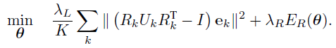This is a nontrivial problem due to the nonlinearity in the first term. We adopt a half-quadratic splitting technique to solve this problem.
we introduce auxiliary variables phi = [phi_k], each phi_k represents the individual rotation angle of line k (theta_m is the common rotation angle of the lines in bin m). We rewrite
as 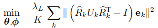

where  , is a penalty weight and when ∞solution to (9) converges to (8). The half-quadratic splitting technique
, is a penalty weight and when ∞solution to (9) converges to (8). The half-quadratic splitting technique
warms up from a small and gradually increases it to ∞.In each step when has been fixed, the problem in (9) is split into two subproblems:(1) Fix theta update phi and (2) Fix phi update theta
Fix theta update phi
This problem is nonlinear, but the phi_k is independent of each other and can be solved separately. The subproblem involving phi_k is:

we can solve it using a gradient descent method, but here we adopt a simpler look-up method. Observing, when β=0, the problem is solve by  . If β=∞, it is solved by
. If β=∞, it is solved by  . So we can divide the range
. So we can divide the range  into 100 discrete values, evaluate the cost in (10), and choose phi_k that minimize the cost.
into 100 discrete values, evaluate the cost in (10), and choose phi_k that minimize the cost.
Fix phi update theta
This subproblem is

This is a quadratic function on and is solved by a linear system.
To optimize the theta,
(dx/dtheta) =0
=0
Due to the overdetermined equations, we rewite differential of [11] in matrix type, that is
 can be rewritten as H=theta*h, which theta can be solved using Linear regression
can be rewritten as H=theta*h, which theta can be solved using Linear regression
Warping
In our project, mesh warping is applied with vertices being the spline control points under Barycentric coordinates.
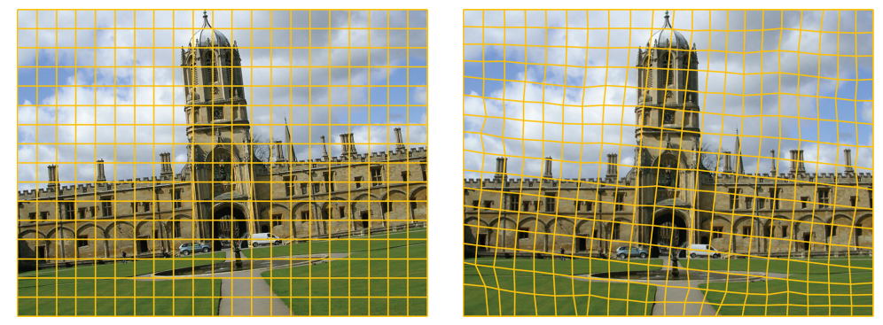First, each grid mesh is separated into two triangles.
[fig1.PNG]Then each triangle in the optimized mesh is transformed into Barycentric coordinates. So, the coordinates of every pixel point lies in the triangle can be represented as a combination of the coordinates of 3 vertices as 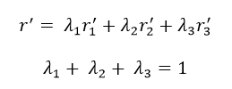
Since the image plane is 2-dim, the linear combination can be revised as

This can be written in matrix form
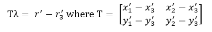And we can solve

The most important reason that we apply Barycentric coordinates is because that the parameter set is the same for the corresponding point in the input mesh grid. 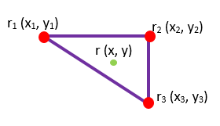
So, we can get the inverse warping function implicitly from 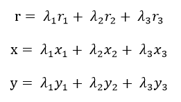
Then the image can be deformed by using bilinear interpolation and sampling from the corresponding points in the input image.
Usage
function I = warpMesh(p,Vx,Vy) %%% Given img and f as the input image and its focal length, %%% p is a structure variable containing all the information for input image %%% Vx is the x coordinates of optimized grid mesh vertices %%% Vy is the y coordinates of optimized grid mesh vertices
Discussion
There are plenty of arbitrary parameter need to be tune in this project including:
- weighted vector for different energy
- grid size
- rotated angle
Here we only show the comparasion of last two, since this is the most important part for user perception.
grid size
since every extracted line must be quantized in to a single quad, the smaller the grid size, the more the line will be.
a 10 pixel quad in fig1 will result in 2917 lines, where 50 pixel quad only have 990 lines. Ther number of lines and quad will heavily affect the speed of optimization in the order from 1 minutes to 2 hours.
 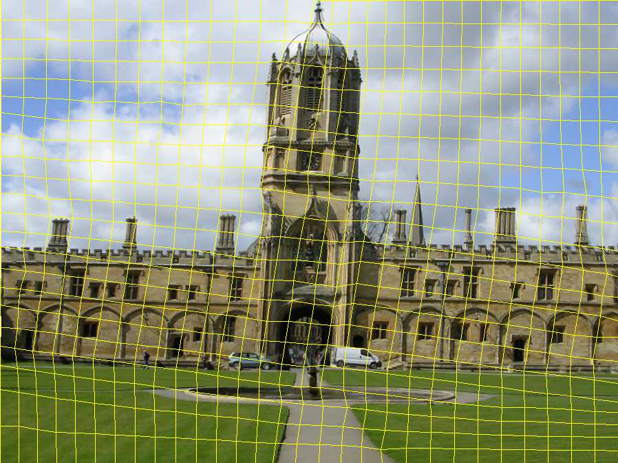
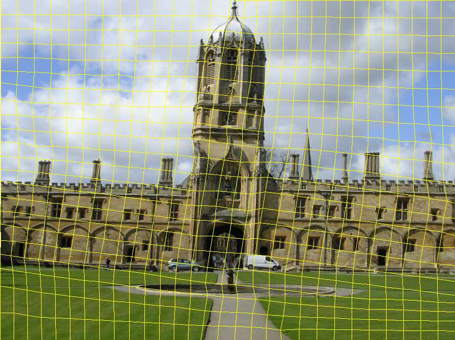
rotated angle
since this paper use wrap to rotate the image, the rotated angle must not be too extrem.
from out primary experiment, if rotated more than 15 degree, user will notified the distortion of the image.


distortion most likely to appear in the quad where no lines in it.
Overall performance
From our observation, this method mostly work well on those picture that have the whole content in the middle, and backgronud such as sky or ground that can be distorted with noticed will be preferred. If the main content exceed the boundry of the picture, there will be distortion that user may noticed.
What we learn
李品萱
This paper is a little hard for me at first. It took me a lot of time to understand how to formulate the sparse linear system in matrix form. Though similar things have been done in HDR, it still took some time to combine the energy equations together. Besides, I am amazed by the use of Barycentric coordinates when implementing mesh warping. Such mathematic tools are so powerful that difficult concepts can be easily solved. To sum up, the project is kind of challenging, but I did learn a lot from it.李柏希
This paper is very interesting. Due to poor skill on photographing, my pictures are sometimes tilting and I have to rotate them with some image processing software. Therefore, when we found this paper, we decided to implement it. I spent some times to understand the algorithm, and assigned jobs to each group member. For me, I countered problems when I implements linear regression method to minimize energy function. After google from web, finally find thw blind point and solve the problem. Although this project is challenging and not easy to implement, we really learn a lot from it.詹雨謙
At first glance, I'm not convincing of the idea of using wraping to rotate images. But when we finish our system, the result really surprised me. And yet the algorithms purposed are so intuitive and easy to understand.I believe the reason we can understand and implement the algorithms so fast is mainly because the trainging of first and second project during this semaster. There are lots of implementation details undocumented in the paper. We put alot of efforts trying to figure out the optimization algoruthms for this project, and often we look back to lecture slide. When we finally unterstand the whole process, I understand lots of lecture material, which I only have some shallow understanding before final project.
In sum, this project not only help me understand more about the lecture, and I really enjoy the results we got.
Gallery


 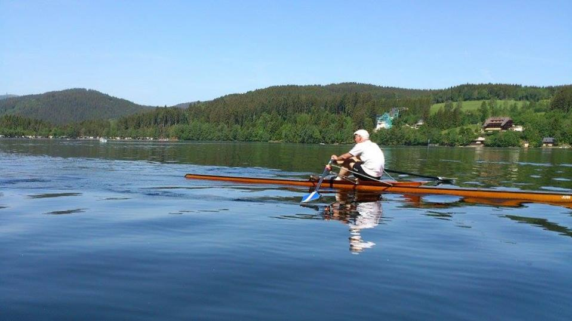
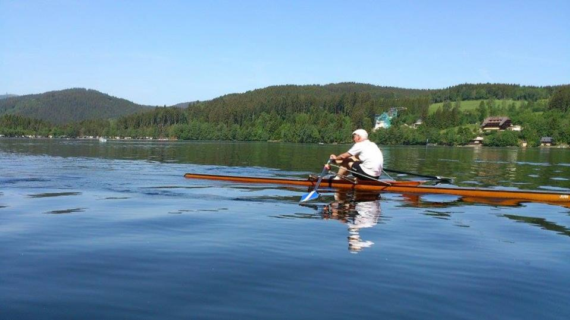